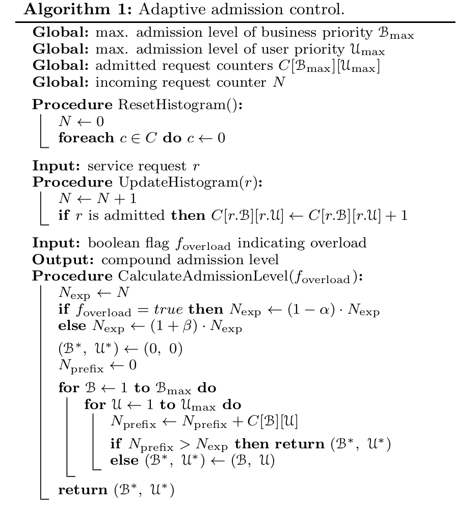

Problem
1. Service-specific overload control could be detrimental to the overall system due to intricate service dependencies or flawed implementation of service.
2. Service developers usually have difficulty to accurately estimate the dynamics of actual workload during the development of service.
Solution
DAGOR: an overload control scheme designed for the account-oriented microservice architecture.
Characteristic
1. service agnostic and system-centric
2. manages overload at the microservice granule
Challenge
1. all the microservices must be monitored
2. let microservices handle overload independently
3. overload control needs to adapt to the service design iteration, workload dynamics, and external environments.
注： 针对微服务体系架构，引入了一个新的超载控制机制，主要的特点就是脱离服务以系统为中心，对每个微服务单元进行控制，从而达到对动态workflow的获取以及控制。
一、Background
All the basic services are shared among all the composite services for invocation.
Moreover, a composite servicein the middle layer is shared by all the entry services as well as other composite services.
Actual Condition : Millions of service requests, Rapid service changes,Dynamic workload.
Subsequent Overload:
Subsequent overload refers to the overload scenario such that there exist more than one overloaded services or the single overloaded service is invoked multiple times by the associated upstream services.Serious Problem:
Success rate of invoke service M decreases by exponential function.
注： 因为多次调用会使得request成倍增加，所以request的成功率会以指数形式下降，eg：当调用一次，success rate = 50%，则调用m次的成功率就是1/2^n.
二、DAGOR Overload Control
Comparsion of some overload Detection ways
- CPU utilization: high load deos not mean overload.
- Response time of a server increases whenever the response time of its downstream servers ,even though the server itself is not overload.
- The queuing time is only affected by the capability of local processing of a server.(Optimal)
Service Admission Control
Business-oriented Admission Control
The business priorities are predefined and stored in a hash table.
Whenever a service request triggers a subsequent request to the downstream service, the business priority value is copied to the downstream request.
User-oriented Admission Control
Session-oriented Admission Control
Adaptive Admission Control
The priority-based admission levels should be able to adapt to the load status towards effective load shedding with minimized impact on the quality of the overall service.
To find the appropriate admission level:
该算法的复杂度之所以能达到O(log_n)，是因为对于每次超载period，都会对下一个period进行expect的处理，下图中α=5% , β = 1%(empirical）从而达到期望值的时间是以对数函数的时间复杂度得到的。

Collaborative Admission Control
Reslove a problem about the round-trip according to the response information.
三、Experiments
The optimal configuration of DAGOR r is difficult to tune in practice, since the request response time contains the request processing time which is service-specific.
When a service gets overloaded, its upstream services should be able to sustain roughly the same saturated throughput despite how many invocations an upstream service task makes to the overloaded service. This reflects the fairness of the overload control.
注：该体系结构主要思想是将超载控制分散化，通过每个service依赖监控来实现。发现并解决了对大规模的体系结构影响很大的subsequent overload情况，从而也使得Upstream service 无论下游服务是否超载都能保持其吞吐量饱和。